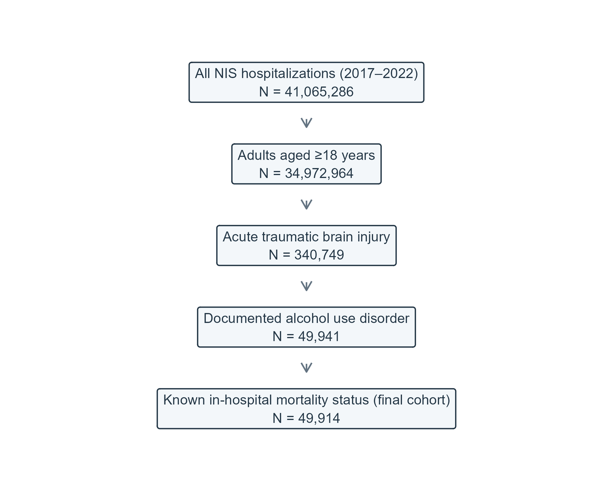
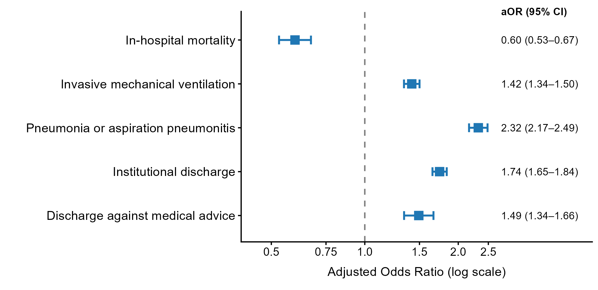
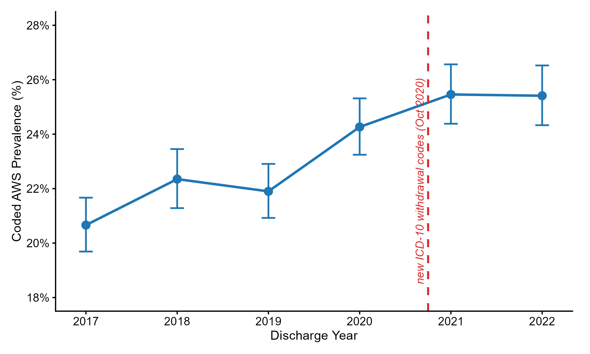

![]()

Alcohol Withdrawal Syndrome in Adult Traumatic Brain Injury with Alcohol Use Disorder
National Inpatient Sample, 2017–2022
Key Findings
- The study included 49,914 adult hospitalizations; 11,654 had coded alcohol withdrawal syndrome (AWS).
- AWS was documented in 23.3% of hospitalizations across 2017–2022.
- AWS was associated with lower adjusted odds of in-hospital death (adjusted odds ratio [aOR], 0.60 (0.53–0.67)).
- AWS was associated with higher adjusted odds of invasive ventilation (1.42 (1.34–1.50)), pneumonia or aspiration (2.32 (2.17–2.49)), institutional discharge among survivors (1.74 (1.65–1.84)), and discharge against medical advice among survivors (1.49 (1.34–1.66)).
- Hospitalizations with AWS had longer stays (11.43 days vs 6.74 days) and higher costs ($42,702 vs $29,159).
Methods
Data and cohort
We analyzed the Healthcare Cost and Utilization Project (HCUP) National Inpatient Sample (NIS) for 2017–2022. The cohort included adult hospitalizations for acute traumatic brain injury (TBI) with documented alcohol use disorder. Each record represents a hospitalization, not a unique person. Survey weights were used to estimate national patterns.
Exposure, outcomes, and covariates
The exposure was a diagnosis code for AWS during the hospitalization. Outcomes were in-hospital death, invasive mechanical ventilation, pneumonia or aspiration, discharge to an institution, discharge against medical advice, length of stay (LOS), and hospital cost. Adjusted models accounted for patient demographics, hospital characteristics, injury features, and chronic conditions.
Statistical analysis
We compared hospitalizations with and without coded AWS using survey-weighted regression. Adjusted odds ratios summarize the association after accounting for the listed covariates; values above 1 indicate higher odds and values below 1 indicate lower odds. Results describe associations and do not establish cause and effect. HCUP-required small-cell suppression is shown as ≤10; related percentages and values recoverable by subtraction are also masked.
Cohort Flow
The steps below show how the analytic cohort was selected from NIS hospitalizations.
Baseline Characteristics
Baseline characteristics are shown for the full cohort and by coded AWS status.
| Characteristic | Overall | No AWS | AWS | p-value |
|---|---|---|---|---|
| Age, years | 53 (38, 63) | 52 (36, 63) | 56 (46, 64) | <0.001 |
| Sex | <0.001 | |||
| Male | 78% | 77% | 81% | |
| Female | 22% | 23% | 19% | |
| Unknown | ≤10 | ≤10 | ≤10 | |
| Race/ethnicity | <0.001 | |||
| White | 62% | 61% | 68% | |
| Black | 13% | 14% | 9.6% | |
| Hispanic | 14% | 14% | 12% | |
| Asian or Pacific Islander | 1.4% | 1.4% | 1.1% | |
| Native American | 2.2% | 2.1% | 2.4% | |
| Other | 3.7% | 3.9% | 3.2% | |
| Unknown | 3.8% | 4.0% | 3.3% | |
| Primary expected payer | <0.001 | |||
| Medicare | 25% | 24% | 27% | |
| Medicaid | 29% | 27% | 34% | |
| Private including HMO | 28% | 30% | 24% | |
| Self-pay | 12% | 12% | 9.5% | |
| No charge | 1.1% | 1.1% | 1.0% | |
| Other | 4.8% | 4.8% | 4.9% | |
| Unknown | 0.3% | 0.3% | 0.2% | |
| Median household income quartile for patient ZIP code | <0.001 | |||
| Q1 | 30% | 31% | 28% | |
| Q2 | 24% | 24% | 23% | |
| Q3 | 23% | 23% | 24% | |
| Q4 | 19% | 18% | 20% | |
| Unknown | 4.0% | 3.7% | 5.2% | |
| Calendar era | <0.001 | |||
| 2017–2019 | 50% | 51% | 46% | |
| 2020 | 17% | 17% | 18% | |
| 2021–2022 | 33% | 32% | 36% | |
| Hospital census region | <0.001 | |||
| Northeast | 17% | 16% | 19% | |
| Midwest | 23% | 24% | 22% | |
| South | 33% | 33% | 30% | |
| West | 27% | 27% | 29% | |
| Hospital bed size | 0.001 | |||
| Small | 10% | 9.9% | 11% | |
| Medium | 26% | 26% | 26% | |
| Large | 64% | 64% | 62% | |
| Hospital location and teaching status | <0.001 | |||
| Rural | 2.2% | 2.2% | 2.4% | |
| Urban, non-teaching | 9.8% | 9.4% | 11% | |
| Urban, teaching | 88% | 88% | 87% | |
| TBI injury subtype | <0.001 | |||
| Concussion, other or unspecified only | 24% | 25% | 19% | |
| Diffuse injury or brain compression | 7.0% | 6.9% | 7.2% | |
| Epidural hemorrhage | 4.1% | 4.2% | 3.8% | |
| Subdural hemorrhage | 41% | 39% | 47% | |
| Contusion/focal, SAH, or edema | 24% | 24% | 22% | |
| Skull fracture | 20% | 22% | 16% | <0.001 |
| Any injury code outside the head (initial encounter) | 45% | 48% | 38% | <0.001 |
| TBI as principal diagnosis | 68% | 68% | 67% | 0.004 |
| Chronic comorbidity count (Elixhauser refined) | <0.001 | |||
| 0 | 35% | 39% | 23% | |
| 1 | 29% | 28% | 31% | |
| 2 | 19% | 17% | 24% | |
| >=3 | 17% | 16% | 22% | |
| Hypertension | 44% | 41% | 54% | <0.001 |
| Diabetes mellitus | 11% | 11% | 11% | 0.5 |
| Chronic pulmonary disease | 12% | 12% | 14% | <0.001 |
| Heart failure | 4.9% | 4.3% | 6.7% | <0.001 |
| Chronic kidney disease | 3.1% | 3.2% | 3.0% | 0.4 |
| Depression | 13% | 12% | 18% | <0.001 |
| Obesity | 5.6% | 5.6% | 5.4% | 0.5 |
| Any liver disease (K70–K77) | 14% | 10% | 26% | <0.001 |
| Alcoholic liver disease (K70) | 8.6% | 5.9% | 18% | <0.001 |
| Other substance use disorder | 16% | 17% | 15% | <0.001 |
| Current or past tobacco/nicotine use | 45% | 44% | 47% | <0.001 |
Values are reported as provided in the suppressed public table. AWS = alcohol withdrawal syndrome. Cells with unweighted counts ≤10, and complementary cells or percentages that could reveal them, are suppressed.
In-Hospital Outcomes
The table presents crude comparisons and adjusted associations for the prespecified outcomes. Continuous outcomes are shown as weighted means. The adjusted estimate compares the odds or mean outcome for hospitalizations with AWS versus those without AWS, after covariate adjustment.
| Outcome | No AWS | AWS | Unadjusted OR/ratio (95% CI) | Adjusted OR/ratio (95% CI) | Adjusted difference (95% CI) | p-value |
|---|---|---|---|---|---|---|
| In-hospital mortality | 5.3% (2,028) | 4.0% (466) | 0.74 (0.67–0.83) | 0.60 (0.53–0.67) | -2.04% (-2.46% to -1.63%) | <0.001 |
| Invasive mechanical ventilation | 22.1% (8,466) | 26.0% (3,030) | 1.24 (1.18–1.30) | 1.42 (1.34–1.50) | +5.97% (+4.94% to +7.00%) | <0.001 |
| Pneumonia or aspiration pneumonitis | 7.8% (3,000) | 18.0% (2,097) | 2.58 (2.43–2.74) | 2.32 (2.17–2.49) | +8.49% (+7.70% to +9.29%) | <0.001 |
| Institutional discharge (among survivors) | 25.7% (9,310) | 39.9% (4,462) | 1.92 (1.83–2.01) | 1.74 (1.65–1.84) | +10.38% (+9.35% to +11.40%) | <0.001 |
| Discharge against medical advice (among survivors) | 4.2% (1,505) | 5.6% (630) | 1.38 (1.25–1.52) | 1.49 (1.34–1.66) | +1.75% (+1.23% to +2.27%) | <0.001 |
| Length of stay | 6.7 days | 12.1 days | 1.80 (1.75–1.86) | 1.70 (1.64–1.75) | +4.69 days (+4.38 to +5.00) | <0.001 |
| Hospital cost | $29,446 | $42,535 | 1.44 (1.41–1.48) | 1.46 (1.42–1.51) | +$13,543 (+$12,456 to +$14,630) | <0.001 |
AWS = alcohol withdrawal syndrome; aOR = adjusted odds ratio; CI = confidence interval; LOS = length of stay; AMA = against medical advice. Cells with unweighted counts ≤10, and complementary cells or percentages that could reveal them, are suppressed.
Adjusted Odds Ratios for In-Hospital Outcomes
The estimates summarize adjusted associations between coded AWS and five binary outcomes. The vertical reference line at 1 marks equal odds between groups; confidence intervals crossing 1 are compatible with no difference at the 95% confidence level.

Annual Trend
The figure shows the annual percentage of eligible hospitalizations with coded AWS. Changes over time may reflect coding practices as well as changes in the hospitalized population.

Sensitivity Analyses
We repeated the mortality analysis after restricting the cohort to hospitalizations with LOS ≥2 days, requiring TBI to be the principal diagnosis, and excluding hospitalizations transferred in. The inverse association with mortality was smaller in the LOS-restricted analysis (0.70 (0.62–0.80)), a pattern consistent with early death or short stays leaving less opportunity for AWS recognition and coding. This does not identify the mechanism behind the association.
| Analysis | Hospitalizations (n) | Deaths (n) | Adjusted OR (95% CI) | p-value |
|---|---|---|---|---|
| Primary analysis (full cohort) | 45,949 | 2,217 | 0.60 (0.53–0.67) | <0.001 |
| LOS ≥2 days | 37,494 | 1,657 | 0.70 (0.62–0.80) | <0.001 |
| TBI as principal diagnosis | 31,234 | 1,798 | 0.58 (0.51–0.66) | <0.001 |
| Exclude transferred-in | 38,511 | 1,732 | 0.59 (0.52–0.68) | <0.001 |
aOR = adjusted odds ratio; CI = confidence interval. Cells with unweighted counts ≤10, and complementary cells or percentages that could reveal them, are suppressed.
Limitations
This analysis uses administrative discharge records, so diagnoses may be missing or inconsistently coded. The NIS does not provide diagnosis timing or Present on Admission indicators; we cannot determine whether AWS or other outcomes began before or during the hospitalization. The lower mortality association may reflect survivor and coding bias: patients who die early or have short stays may have less opportunity for AWS to be recognized and coded. The LOS ≥2 days sensitivity analysis addresses part of this concern but cannot remove it. The database also lacks detailed clinical severity measures, linked records across hospitals, and inpatient medication data. Findings should therefore be interpreted as associations among hospitalizations, not treatment effects or patient-level risks.
References and Data Citation
Healthcare Cost and Utilization Project (HCUP). National Inpatient Sample (NIS), 2017–2022. Agency for Healthcare Research and Quality, Rockville, MD. HCUP data are made available through the HCUP Partners.
Appendix. ICD-10-CM Code List
Table A1. ICD-10-CM code groups used to identify the cohort and study conditions.
| Condition | ICD-10 code(s) | Description |
|---|---|---|
| Acute traumatic brain injury (TBI) | S06.xxxA | Intracranial injury, initial encounter (7th character A, length 7) |
| Active alcohol use disorder (AUD) | F10.1, F10.2 | Alcohol abuse or dependence (excluding remission-only codes F10.11, F10.21) |
| Alcohol withdrawal syndrome (AWS) | F10.230–F10.239, F10.130–F10.139 | Alcohol withdrawal with or without delirium or perceptual disturbance (F10.13x valid from Oct 2020) |
| Invasive mechanical ventilation (IMV) | 5A1935Z, 5A1945Z, 5A1955Z | Invasive mechanical ventilation (<24h, 24–96h, >96h; ICD-10-PCS) |
| Pneumonia | J12–J18 | Viral, bacterial, or unspecified pneumonia |
| Aspiration pneumonitis | J69.0 | Pneumonitis due to inhalation of food and vomit |
| Other substance use disorder | F11–F16, F18, F19 | Other drug abuse or dependence (excluding remission-only codes) |
| Any liver disease | K70–K77 | Any acute or chronic liver disease |
| Alcoholic liver disease | K70 | Alcoholic liver disease |
| Skull fracture | S02.0, S02.1, S02.91 | Fracture of vault, base, or unspecified skull (7th character A or B) |
| Extracranial injury | S10–S99 | Trauma outside the head (initial encounter; 7th character A, B, or C) |
| Tobacco use | F17, Z72.0, Z87.891 | Current nicotine dependence or documented tobacco use history |